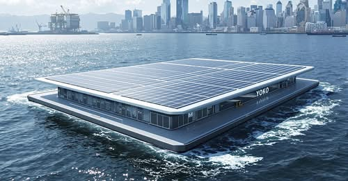

← Terra Nova Development — Article Index
Article #141
Floating Solar Power Plants: Turning the World’s Waters into Clean Energy Infrastructure
Floating solar arrays and carefully engineered water cooling can expand clean energy infrastructure.

The Technology Exists. The Opportunity Is Here.
Concept illustration: a floating solar platform near an urban waterfront.
The Opportunity Is Already in Front of Us
Humanity is searching for abundant, affordable, cleaner energy while enormous surfaces of water receive sunlight every day. Reservoirs, quarry lakes, industrial ponds, sheltered coastal waters, and other suitable sites offer an opportunity to generate electricity without competing directly with farmland or many developed urban sites.
The idea is straightforward: place solar panels on engineered floating platforms, connect them to safe electrical infrastructure, and use the electricity locally or deliver it to the grid. Floating photovoltaic systems—often called floating PV or floatovoltaics—are not science fiction. They have already been installed in multiple countries. We do not need to invent solar cells, floating structures, power electronics, or electrical grids from scratch.
The real task is to combine technologies we already understand, improve their reliability, and deploy them wherever environmental conditions and economics make sense.
1. Why Build Solar Power Plants on Water?
Traditional solar farms can be enormously useful, but they require land. Floating solar offers another option, particularly where a community has reservoirs or other appropriate water surfaces near demand centers and existing transmission infrastructure.
Potential advantages include reduced land-use conflicts, modular construction, and—in some settings—lower panel operating temperatures. Floating arrays can also reduce evaporation from covered portions of certain reservoirs, although the amount varies with climate, array design, and site conditions.
There are limits. Not every water body is suitable. Wind, waves, water-level changes, shipping, fishing, recreation, water quality, and habitat protection must shape the design. Floating solar should complement rooftop, ground-mounted, and other renewable energy—not replace every other approach.
2. Water Can Help Cool the System
Solar panels generally produce less electrical power as their cell temperature rises. Being above water may help some floating installations operate cooler than comparable land-based systems, depending on local conditions and ventilation.
We can also investigate purpose-built cooling systems. In one approach, seawater or freshwater transfers heat through a corrosion-resistant heat exchanger while a separate closed-loop fluid circulates through the equipment being cooled. That separation is especially important in saltwater environments: raw seawater should not simply be pumped across ordinary electrical components or untreated solar-module surfaces.
Any active cooling system uses pumps, piping, controls, and maintenance. Its electrical consumption and operating cost must be compared with the extra electricity it produces. Cooling is worthwhile only when the net benefit is positive. Passive cooling and good airflow may prove more economical at many sites.
This is an engineering problem we can test with prototypes and measurements—not a reason to abandon the idea.
3. The Saltwater Opportunity
Coastal waters offer extraordinary possibilities, especially near dense population centers and industrial ports. But saltwater is unforgiving. Salt spray, corrosion, biofouling, storms, waves, currents, and anchoring loads make marine floating solar more demanding than many inland installations.
Practical designs may require marine-grade materials, sealed electrical connectors, corrosion-resistant fasteners, robust moorings, protected cable routes, and inspection programs. Cooling systems may use titanium or other suitable heat-exchanger materials where justified by site conditions and cost.
Sheltered harbors, enclosed industrial basins, and other low-wave locations may be more practical early candidates than exposed ocean waters. Marine deployment should proceed through staged pilots, with independent performance and environmental monitoring.
The lesson is not that every square mile of ocean should become a power station. It is that we should evaluate suitable sites rather than dismiss an existing technological option.
4. Can Floating Solar Supply Its Own Operating Power?
Yes, in a straightforward sense: a solar installation can use part of the electricity it generates to run monitoring systems, communications, control equipment, and pumps, with appropriate batteries or grid connections for periods without sunlight.
But no power plant is self-sustaining merely because it powers some of its own equipment. Electricity used by pumps and cooling equipment reduces the amount available to customers. The design goal is maximum net useful energy over the life of the project.
For example, engineers would compare the extra energy gained through cooler panels with the energy consumed by circulation pumps. They would also calculate maintenance, installation, reliability, and replacement costs. A simpler passive system could outperform an elaborate active cooling system on total value.
This kind of systems engineering turns an exciting idea into a practical infrastructure investment.
5. Where the Electricity Goes
Floating solar could supply electricity to nearby water-treatment plants, industrial facilities, ports, municipal systems, and neighborhoods. It can also feed regional electrical grids through properly designed interconnections.
Energy storage can help shift some daytime solar generation into evening hours. Batteries, demand management, grid interconnection, and other resources can help balance variable output. A solar installation alone cannot guarantee uninterrupted power through the night or during prolonged cloud cover.
In appropriate coastal settings, floating solar might be paired with desalination or water-treatment infrastructure, but desalination remains energy-intensive and requires careful management of brine and marine impacts. Integration should be judged by measured costs and environmental performance.
6. The Environmental Responsibility
Water is not empty real estate. Lakes, reservoirs, rivers, and coastal areas support living ecosystems and human uses. Floating platforms change sunlight reaching the water, potentially influencing temperature, dissolved oxygen, aquatic plants, and wildlife.
Projects should begin with site-specific ecological assessments, navigation and public-access reviews, consultation with affected communities, and monitoring plans. Coverage should be limited where necessary to preserve ecological function and water use. Floating equipment must be designed to prevent leaks, debris, and electrical hazards.
An installation that generates clean electricity while damaging a sensitive ecosystem would fail the broader purpose. Our goal must be to improve the world as a whole—not solve one problem by creating another.
7. A Practical Deployment Strategy
First, identify suitable reservoirs, industrial ponds, and protected coastal sites close to existing electrical infrastructure. Evaluate sunlight, water conditions, storms, permitting requirements, ecological constraints, and expected electricity demand.
Second, build a modest pilot using commercially available floating PV equipment. Measure real-world output, temperature, maintenance needs, and environmental conditions over multiple seasons.
Third, compare passive cooling with a carefully designed closed-loop cooling trial. Record the energy consumed by pumps, additional energy produced, corrosion performance, and total operating cost.
Fourth, expand only where the measured benefits justify expansion. Develop standard designs for similar sites while adapting them to local conditions. Include workforce training, safety programs, financing, and long-term maintenance from the beginning.
Finally, share successful designs and performance data internationally. The best solutions may emerge through cooperation among engineers, utilities, manufacturers, governments, universities, and communities.
8. Cooperation Is the Accelerator
Floating solar fits directly into the larger Terra Nova Development philosophy: humanity already has an enormous store of useful knowledge, and we should stop treating every technological success elsewhere as a threat.
Countries in Asia and other regions have experience with floating photovoltaic projects. American engineers, utilities, research institutions, and manufacturers can learn from that work while contributing their own expertise. Sharing engineering lessons does not eliminate the need for domestic resilience, quality control, or fair commercial agreements.
The world benefits when we learn from one another. A successful design should not need to be reinvented independently in every country before people are allowed to use it.
9. A Future Built from Existing Tools
Floating solar will not, by itself, solve every energy challenge. Its output is intermittent, its economics vary, and some locations are unsuitable. Yet those limitations are reasons for good planning—not reasons to overlook its potential.
The central point is bigger than any single technology. We have solar modules. We have floating platforms. We have heat exchangers, batteries, power electronics, and sophisticated engineering tools. We know how to build infrastructure and monitor its performance. New technologies will undoubtedly improve these systems, but we do not need to wait for a future invention to begin.
What we need is the will to test practical ideas, cooperate across borders, protect the environment, and invest in solutions that produce measurable benefits.
Conclusion: The Sun Is Shining on the Opportunity
Every day, sunlight falls on the world’s waters. Some of those locations can become part of a cleaner, more resilient energy system through careful engineering and responsible deployment.
Imagine floating solar plants supplying power to cities, ports, water facilities, and industries—built with existing technologies, improved by innovation, and guided by rigorous environmental stewardship.
We do not have to wait for a technological miracle. We already know enough to begin. Let us use what humanity has learned, measure what works, and build the future together.
There is no them. There is only us.
Terra Nova Development • Article #141